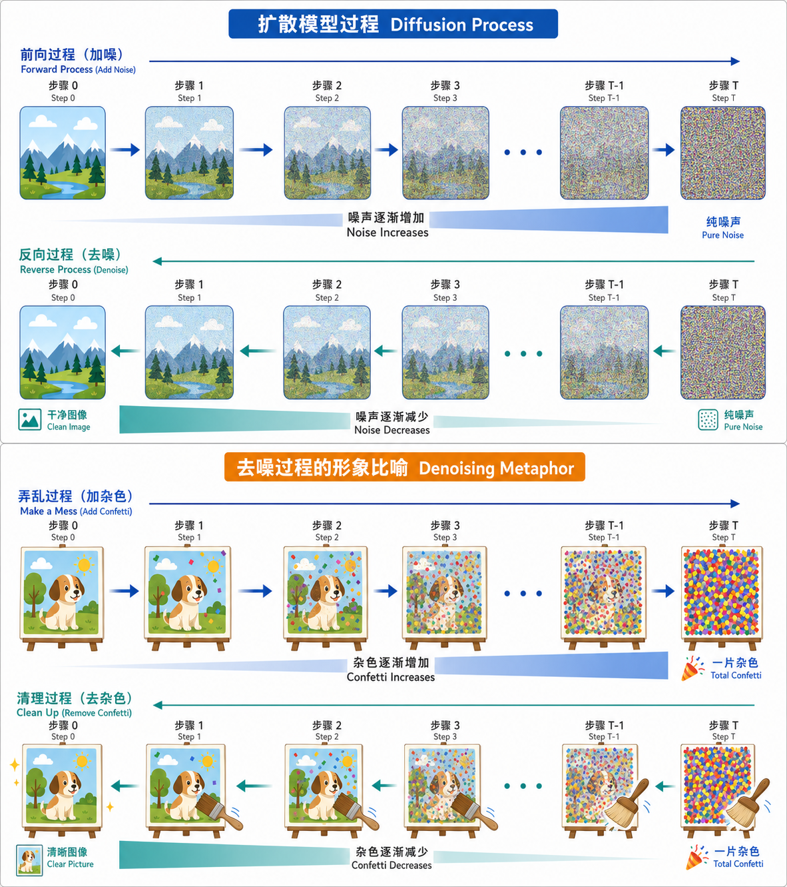

扩散模型原理
前置知识：理解 VAE 的编码器-解码器结构与 ELBO 训练目标、GAN 的生成器-判别器对抗训练。如需回顾，参考 1_生成模型谱系。数学方面需要掌握高斯分布、KL 散度、贝叶斯公式，参考 附录：数学基础速览。
一、直觉与概述
1.1 核心思想：噪声的"录像倒放"
扩散模型的核心思想：逐步往图像上加噪声把它变成纯噪声（前向过程），然后训练一个神经网络学会逐步去噪（反向过程）。
想象你拿一张清晰的照片，每秒往上面撒一点细沙。1000 秒后照片完全被沙子覆盖。如果你录下了整个过程，倒放录像就能看到沙子一粒粒飞走、照片逐渐清晰。扩散模型就是学会这个"倒放"过程的模型：
- 前向过程（加噪）：已知的、固定的物理过程，不需要学习
- 反向过程（去噪）：需要神经网络来学习的过程
- 生成新图像：从纯噪声出发，执行反向过程，逐步去噪得到全新的图像

1.2 与 VAE/GAN 的直觉对比
| 模型 | 生成策略 | 类比 |
|---|---|---|
| VAE | 一步到位：从隐变量 $z$ 直接解码出图像 | 画家一笔画完整幅画 |
| GAN | 一步到位：生成器从噪声直接映射到图像 | 造假者直接伪造一张画 |
| Diffusion | 逐步精修：从噪声出发，经过 $T$ 步逐渐去噪 | 雕塑家从石块逐步雕琢出作品 |
扩散模型的"逐步精修"策略带来两个关键优势：
- 训练更稳定：每一步只需去掉一小部分噪声，任务更简单（对比 GAN 的模式崩塌）
- 生成质量更高：多步精修天然适合产生高质量的细节（对比 VAE 的模糊输出）
1.3 扩散模型家族全景
扩散模型（Diffusion Models）
├── DDPM (2020, Ho et al.) ← 本文重点，奠基性工作
├── DDIM (2020, Song et al.) ← 本文重点，加速采样
├── Score-based Models (Song & Ermon) → SDE/ODE 统一框架
├── Latent Diffusion (2022) → 在 VAE 潜空间做扩散 → Stable Diffusion
└── 条件扩散模型 → Classifier-Free Guidance（后续章节）二、前向过程（加噪）
2.1 单步加噪
前向过程的每一步：把当前图像和一小份高斯噪声混合。
其中 $\beta_t \in (0, 1)$ 是第 $t$ 步的噪声调度系数。等价的采样形式：
- $\sqrt{1 - \beta_t}\, x_{t-1}$：信号衰减（保留大部分原图）
- $\sqrt{\beta_t}\, \epsilon$：注入新噪声
- 方差保持：若 $\text{Var}(x_{t-1}) = 1$，则 $\text{Var}(x_t) = (1 - \beta_t) + \beta_t = 1$，数值稳定
2.2 噪声调度 $\beta_t$
线性调度（DDPM 原文）：$\beta_t = \beta_{\min} + \frac{t-1}{T-1}(\beta_{\max} - \beta_{\min})$，其中 $\beta_1 = 10^{-4}$，$\beta_T = 0.02$，$T = 1000$。问题：后期信号已消失但仍在加噪，浪费"噪声预算"。
余弦调度（Improved DDPM）：
噪声更均匀地分布在整个过程中，信噪比变化更平滑，多数任务上优于线性调度。
2.3 关键结论：从 $x_0$ 直接跳到任意 $x_t$
阅读建议：这一小节的推导用于解释公式从哪里来。第一次阅读时，只要抓住最终结论和它的意义即可；中间展开可以当作选读。
定义 $\alpha_t = 1 - \beta_t$，$\bar\alpha_t = \prod_{s=1}^{t} \alpha_s$（累积信号保留率）。
从单步公式 $x_t = \sqrt{\alpha_t}\, x_{t-1} + \sqrt{1 - \alpha_t}\, \epsilon_t$ 出发，递归展开 $x_{t-1}$：
合并后方差为 $\alpha_t(1 - \alpha_{t-1}) + (1 - \alpha_t) = 1 - \alpha_t\alpha_{t-1}$。继续递归到 $x_0$：
重要性：训练时不需逐步加噪，随机采样 $t$ 后直接从 $x_0$ 跳到 $x_t$，大幅节省计算。$\sqrt{\bar\alpha_t}$ 是信号系数，$\sqrt{1 - \bar\alpha_t}$ 是噪声系数。$t$ 越大信号越弱。
2.4 信噪比（SNR）
$\text{SNR}(t) = \bar\alpha_t / (1 - \bar\alpha_t)$：
| 阶段 | $t$ 范围 | $\bar\alpha_t$ | 图像状态 |
|---|---|---|---|
| 早期 | 1~100 | 接近 1 | 几乎看不出噪声 |
| 中期 | 100~500 | 0.5~0.1 | 依稀可辨结构 |
| 后期 | 500~1000 | 接近 0 | 纯噪声 |
模型在中期步骤学到的"去噪"最有用——既有噪声需要去除，又有足够的结构信息可以利用。
数值示例（线性调度，$T=1000$）：
t = 100 : ᾱ = 0.9802 信号系数 = 0.990 噪声系数 = 0.140 → 几乎全是原图
t = 300 : ᾱ = 0.5932 信号系数 = 0.770 噪声系数 = 0.638 → 信号和噪声各半
t = 500 : ᾱ = 0.0868 信号系数 = 0.295 噪声系数 = 0.956 → 基本看不出原图
t = 800 : ᾱ = 0.0014 信号系数 = 0.037 噪声系数 = 0.999 → 完全是噪声三、反向过程（去噪）
3.1 目标：学习 $p_\theta(x_{t-1}|x_t)$
由于每步加噪量很小，反向步骤也可以用高斯分布近似：
核心问题：如何参数化 $\mu_\theta$？Ho et al. (2020) 发现——预测噪声比直接预测均值更好。
3.2 为什么预测噪声 $\epsilon$
利用贝叶斯公式，前向过程的后验分布 $q(x_{t-1}|x_t, x_0)$ 可以解析计算：
$\tilde\mu_t$ 依赖 $x_0$，但生成时没有 $x_0$。利用 $x_0 = (x_t - \sqrt{1-\bar\alpha_t}\,\epsilon) / \sqrt{\bar\alpha_t}$ 代入：
因此让网络预测 $\epsilon_\theta(x_t, t)$ 即可计算 $\mu_\theta$：
预测噪声的好处：(1) $\epsilon \sim \mathcal{N}(0,I)$ 统计特性稳定，比预测自然图像更简单；(2) 所有时间步共享同一目标分布；(3) 实验中 FID 比预测 $x_0$ 或 $\mu$ 好 20%+。
3.3 方差选择
$\sigma_t^2 = \beta_t$（DDPM 原文，上界）或 $\sigma_t^2 = \tilde\beta_t$（后验方差，下界），实践中差别不大。Improved DDPM 让网络学习方差（在两个边界间插值），获得了更好的对数似然。
四、训练目标
4.1 从 ELBO 到简化损失
阅读建议：ELBO 推导用于说明 DDPM 训练目标的理论来源。主线阅读重点是：扩散模型最终可以简化成“随机加噪后预测噪声”的 MSE 训练。
完整 ELBO 展开为 $T$ 个 KL 散度项。因为两侧都是高斯，KL 退化为均值的 MSE。用 $\epsilon_\theta$ 参数化后，每项变为：
Ho et al. 的关键发现：去掉随 $t$ 变化的权重系数，使用等权简化损失效果更好：
4.2 训练算法
算法：DDPM 训练
───────────────────────────────────────
重复直到收敛：
1. 采样 x_0 ~ 数据集
2. 采样 t ~ Uniform{1, ..., T}
3. 采样 ε ~ N(0, I)
4. 计算 x_t = √(ᾱ_t) * x_0 + √(1 - ᾱ_t) * ε
5. 计算损失 L = ||ε - ε_θ(x_t, t)||²
6. 反向传播，更新 θ优雅之处：不需逐步加噪、不需执行反向采样链、损失就是 MSE——没有对抗训练，没有 KL 平衡项。
4.3 时间步嵌入
网络需要知道当前噪声水平。时间步 $t$ 通过正弦位置编码（与 Transformer 相同）转为高维向量，以加法或 scale-and-shift 方式注入 U-Net 每个残差块：
五、DDPM 采样
算法：DDPM 采样
───────────────────────────────────────
1. x_T ~ N(0, I)
2. for t = T, T-1, ..., 1:
ε̂ = ε_θ(x_t, t)
z ~ N(0, I)（t=1 时 z=0）
x_{t-1} = (1/√α_t)(x_t - β_t/√(1-ᾱ_t) * ε̂) + σ_t * z
3. 返回 x_0确定性部分根据预测噪声计算去噪均值，随机部分 $\sigma_t z$ 维持分布正确性。最后一步不加噪声。
缺点：1000 步网络推理 = 极慢。以 256x256 图像为例：
- 每步 U-Net 推理约 50ms（A100 GPU）
- 1000 步 = 50 秒生成一张图
- 对比 GAN：一次前向传播 = 几十毫秒
这促成了 DDIM 和后续众多加速方法的提出。
六、DDIM 采样
6.1 核心思想
DDIM（Song et al., 2020）发现：反向过程不一定需要随机性。存在一族非马尔可夫前向过程，与 DDPM 共享 $q(x_t|x_0)$ 但反向可以确定性。
6.2 更新公式
- $\sigma_t = \sqrt{(1-\bar\alpha_{t-1})/(1-\bar\alpha_t)} \cdot \sqrt{\beta_t}$：退化为 DDPM
- $\sigma_t = 0$：完全确定性（纯 DDIM）
6.3 跳步采样
DDIM 可选时间步子序列，如 $\tau = [1000, 950, \ldots, 50, 1]$（20 步），公式中直接使用对应 $\bar\alpha$ 值。
| 方法 | 步数 | FID (CIFAR-10) | 加速 |
|---|---|---|---|
| DDPM | 1000 | 3.17 | 1x |
| DDIM | 100 | 4.67 | 10x |
| DDIM | 50 | 4.97 | 20x |
| DDIM | 20 | 6.84 | 50x |
50 步 DDIM 已接近 1000 步 DDPM 质量，速度快 20 倍。
6.4 确定性映射的额外特性
$\sigma_t = 0$ 时，同一噪声 $x_T$ 始终生成同一图像，支持：(1) 语义插值——在两个 $x_T$ 间做 slerp 后去噪得到平滑过渡；(2) 图像编码——将真实图像"反转"为 $x_T$，实现编辑。
七、总结与速查表
核心公式
| 公式 | 含义 | ||
|---|---|---|---|
| $x_t = \sqrt{\bar\alpha_t}\, x_0 + \sqrt{1 - \bar\alpha_t}\, \epsilon$ | 前向加噪 | ||
| $L = \ | \epsilon - \epsilon_\theta(x_t, t)\ | ^2$ | 训练损失 |
| $x_{t-1} = \frac{1}{\sqrt{\alpha_t}}(x_t - \frac{\beta_t}{\sqrt{1-\bar\alpha_t}}\epsilon_\theta) + \sigma_t z$ | DDPM 采样 | ||
| $x_{t-1} = \sqrt{\bar\alpha_{t-1}}\hat{x}_0 + \sqrt{1-\bar\alpha_{t-1}}\,\epsilon_\theta$ | DDIM 采样 ($\eta=0$) |
DDPM vs DDIM
| 特性 | DDPM | DDIM |
|---|---|---|
| 采样类型 | 随机 | 确定性 ($\eta=0$) 或随机 |
| 步数 | 必须 $T$ 步 | 可任意少 |
| 同一噪声同一结果 | 否 | 是 ($\eta=0$) |
| 典型用法 | 科研评测 | 实际部署 |
核心要点
- 扩散模型 = 前向加噪 + 反向去噪。前向固定，反向由神经网络学习。
- 关键数学：$x_t = \sqrt{\bar\alpha_t}\, x_0 + \sqrt{1-\bar\alpha_t}\, \epsilon$，训练时不需逐步加噪。
- 预测噪声 $\epsilon$ 优于预测 $x_0$ 或 $\mu$，这是 DDPM 的核心工程洞察。
- 训练极简：随机采时间步、加噪、预测噪声、MSE。没有对抗训练，没有 KL 平衡。
- DDIM 跳步加速：推理 20~50 步，速度提升 20~50 倍，质量损失很小。
- 噪声调度很重要：余弦通常优于线性。
- EMA 是免费午餐：所有扩散模型都应使用 EMA 权重推理。
下一篇：3_条件生成与引导 —— 扩散模型默认生成随机图像，但实际应用需要"文本到图像"等条件生成。Classifier Guidance 和 Classifier-Free Guidance 是实现这一目标的两种核心技术。